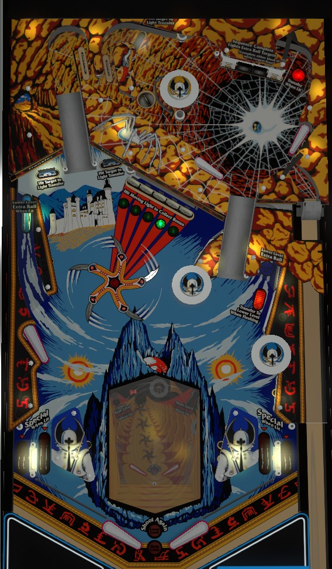

Drop targets, standup targets, and rollover lanes advance the bonuses. One bonus advance scores only 10 points, but the Main playfield bonus is multiplied by the Upper & Lower playfield bonus, which can both reach 990 points. The shot behind the top drop targets and the three main playfield saucers transfer the ball to the lower playfield when lit; the lower playfield can light or score extra balls and specials.
There are two end of ball bonuses: the Main playfield bonus and the Upper & Lower playfield bonus. Both bonuses start at 10 points. The Main bonus can only be advanced on the Main playfield, and the Upper & Lower bonus can only be advanced on the other playfields. A bonus advance adds 10 points to the corresponding bonus. Both bonuses max at 990 points. At the end of the ball, or when the bonus is collected mid-ball, the awarded score is equal to the Main bonus multiplied by the Upper & Lower bonus. The maximum value of this is 990 x 990 = 980,100 points.
On the upper playfield: any rollover switch, and drop target, the saucer, and the lane behind the drop targets all advance the Upper & Lower bonus.
On the main playfield: lit standup targets advance Main bonus once and convert into flashing targets when lit; flashing standup targets advance Main bonus twice; the left side lane and all in/out lanes advance Main bonus once; after hitting all 5 standup targets twice each, there will be one moving lit target, and hitting that lit target collects the bonus and resets the sequence.
On the lower playfield: the left and right outer shots advance the Upper & Lower bonus once. Lit standup targets advance the bonus once, and flashing targets advance the bonus twice.
Collecting the bonus from the main playfield standup targets does not reset either bonus count. Bonus is never held from ball to ball.
The left and right ramps can be used to access the upper playfield from the main playfield at any time. The upper playfield drains back to the main playfield between the two upper flippers. The exit from the shooter lane is not blocked off in any way, so a ball can fall back into the shooter lane for a replunge.
There are 4 places to access the lower playfield.
The lower playfield is actually full sized, but appears significantly smaller thanks to the "lens" used as a viewing window on the main playfield. There are 4 shots on the lower playfield.
When the ball drains from the lower playfield, the main/upper playfield ball will be kicked out from whichever transfer point was used- unless you have earned a Lower Playfield Extra Ball. To earn this extra ball, you need to complete the upper playfield drop targets. The upper playfield drop targets are a 4-bank whose outer targets are white and inner targets are black; to complete the bank, you must hit either both black targets first, or both white targets first. If you hit exactly one target of one colour and then a target of the opposite colour, the bank resets. All drop targets down score 5,000 points and an Upper & Lower bonus advance. If Lower Level Shoot Again is lit, your lower playfield extra ball is played and used immediately after you drain on your next trip to the lower playfield.
The Main Playfield Extra Ball that can be earned from the right lane of the lower playfield is a conventional extra ball.
Krull has a conventional in/out lane setup. All lanes score 5,000 points, advances the main playfield bonus, and can be lit for Special. Every 2nd shot to the lower playfield left lane lights one in/out lane for Special. Pop bumpers and slingshots seem to rotate which lane(s) are lit for Special.
In competition/novelty play, Special and extra ball score 100,000 points.